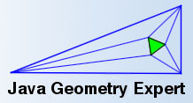

Welcome to this user's guide! This highly interconnected collection of web pages represents the complete user's guide to The Java Geometry Expert . Here, you will learn about all important aspects of our program.
 The Java Version of Geometry Expert (JGEX) is an ongoing developing
system which initially began in early 2004 in Wichita State Univerisity. JGEX is a system which combines our approach for visually dynamic
presentation of proofs (VDDP), dynamic geometry software (DGS), automated
geometry theorem prover (GTP) .
The VDDP part is the most distinctive part of JGEX. It is based on our work on DGS and GTP. JGEX can be used to create proofs either manually and automatically. It provides a seris of visual effects for presenting of these proofs. With the applet version of JGEX, the user may create beautiful examples and put them on the web to share with others.
The manual of JGEX.